정밀안전진단
재료 결함을 조사하고 구조 안전성과 원인까지 분석합니다
정밀안전진단이란?
정밀안전진단은 1종 시설물이 때가 되어 받거나, 안전점검에서 중대한 결함이 걱정될 때
받는 진단으로, 자세한 조사와 구조 해석으로 결함 원인과 보수·보강 방법을 내놓습니다.
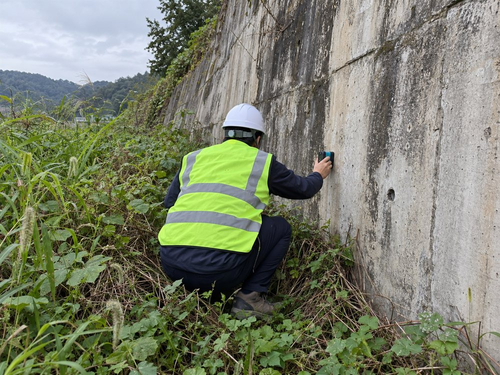
시설물안전법 제12조에 따라 받는 진단으로, 시설물의 물리적 결함과 기능이 떨어진 정도를 공학적으로 분석합니다. 구조 해석으로 무너질 가능성이나 숨은 위험을 미리 내다봅니다.
정밀안전진단이 필요한 까닭
구조가 버틸 수 있는 한계를 공학적으로 밝히고, 측정값에 기댄 보수 계획을 세우기 위해서입니다.
| 구분 | 목적 | 내용 |
|---|---|---|
| 구조 성능 검증 | 하중 재하 능력 판정 | 설계 도서와 견줘 지금 건물이 견딜 수 있는 한계 하중 밝히기 |
| 재난 대응 | 잠재적 위험 요인 제거 | 구조가 얼마나 지쳤는지, 땅이 안정적인지 분석 |
| 법규 준수 | 1종 시설물 필수 | 과태료를 피하고, 사고가 나도 관리 책임을 다했다는 기록 남기기 |
결과가 나오면 무엇이 정해지나
진단 결과는 건물을 지금 상태 그대로 계속 써도 되는지, 아니면
고치거나 덧대야 하는지, 일부를 막아야 하는지 가르는 법과 공학의 잣대가 됩니다.
구조 안전성, 쓰기 편한 정도, 내구성 평가를 합쳐 A(우수)부터 E(불량)까지 등급을 매깁니다.
D등급 이하가 나오면 보수·보강 같은 조치를 하고 그 결과를 알려야 합니다.
받은 등급에 따라 다음 진단 시기와 중점 관리 항목이 정해집니다.
누가, 언제 받나
1종·2종 시설물 진단 대상
시설물 크기와 중요도에 따라 1종과 2종으로 나뉘고,
특히 1종 시설물은 준공 뒤 일정 기간이 지나면 때마다 정밀안전진단을 받는 게 법적 의무입니다.
고속철도 다리·터널, 댐처럼 사회에 미치는 영향이 큰 대형 시설물
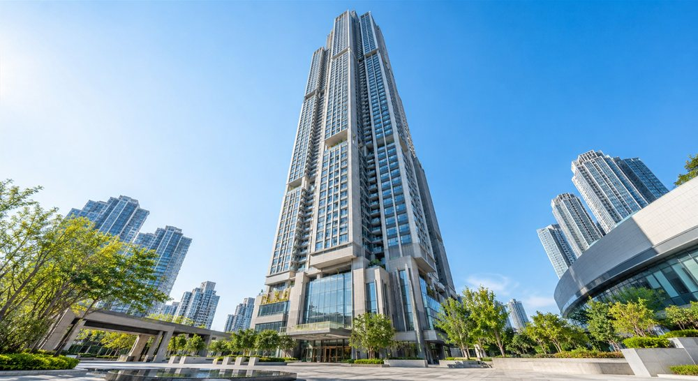
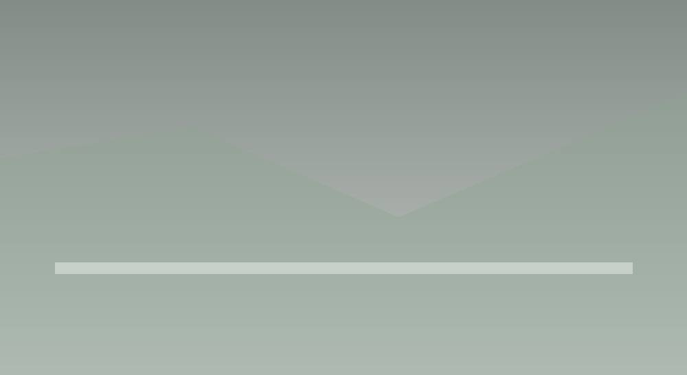
(원래는 정밀안전점검 대상이지만, 건물이 아닌 시설은 정밀점검에서 D·E등급이 나오면 진단을 받음)
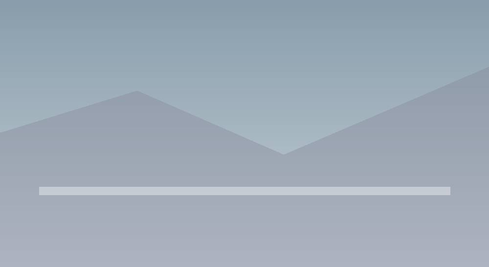
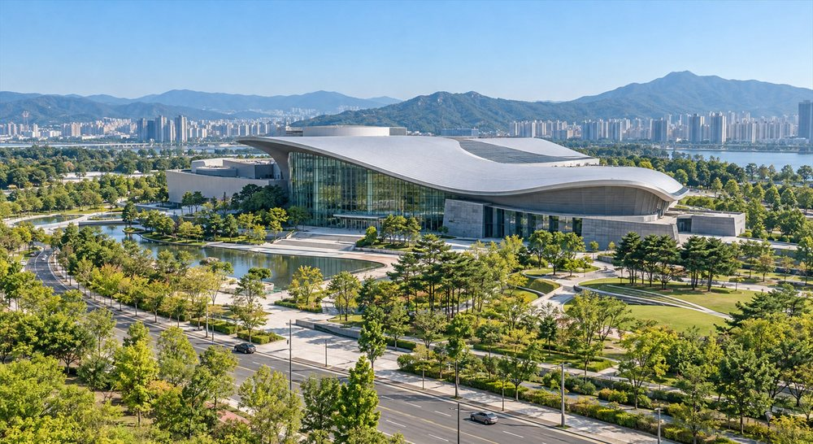
3종 시설물은 언제 진단을 받나
3종 시설물은 1종·2종에 들지 않는 작은 시설 가운데
따로 안전 관리가 필요한 곳으로, 무너질 염려가 있거나 큰 사고가 났을 때 긴급 진단을 받습니다.
15년이 넘은 작은 다중이용시설과 낡은 건물
안전점검·긴급안전점검 결과 재해를 막기 위해 필요하다고 인정됐을 때
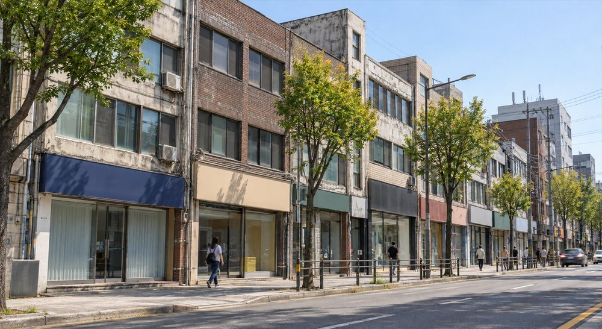
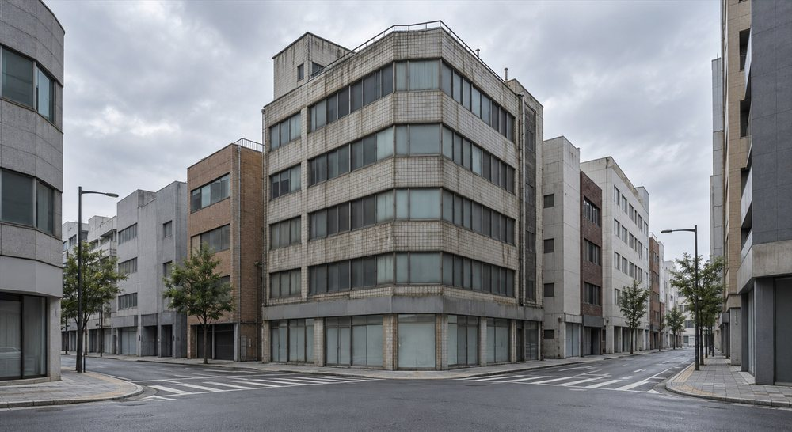
진단 등급과 주기
1종 시설물은 준공 뒤 10년이 지난 때부터 1년 안에 첫 정밀안전진단을 받아야 하고,
그다음부터는 직전 진단 등급에 따라 정해진 때마다 받습니다.
| 정밀안전진단대상 | A 등급 | B/C 등급 | D/E 등급 |
|---|---|---|---|
| 정밀안전진단 주기 | 6년에 1회 이상 | 5년에 1회 이상 | 4년에 1회 이상 |
구조 안전과 성능을 어디까지 평가하나
구조 해석 모델을 만들어 지금 건물이 안전하게 견딜 수 있는 최대 하중과 약한 곳을 숫자로 분석합니다.
부재별 응력 해석, 얼마나 무게를 견디는지 판정, 구조 안전율 검토
콘크리트 시료를 떼어 실제 압축 강도를 직접 재서, 구조체가 아직 얼마나 버틸 수 있는지와 안전 여유를 확인합니다.
단단한 정도, 녹, 재료가 버티는 힘
중성화가 얼마나 들어갔는지, 염분이 얼마나 들었는지 분석해 철근이 언제 녹슬지, 건물을 언제까지 쓸 수 있을지 가늠합니다.
알칼리성 잃은 깊이, 소금기, 앞으로 버틸 햇수
땅과 기초의 움직임을 재서, 금이 낡아서 생긴 건지 침하로 인한 구조 문제인지 공학적으로 가립니다.
움직임 측정, 기초 안정성, 침하가 계속되는지
정밀안전진단을 하는 시설들
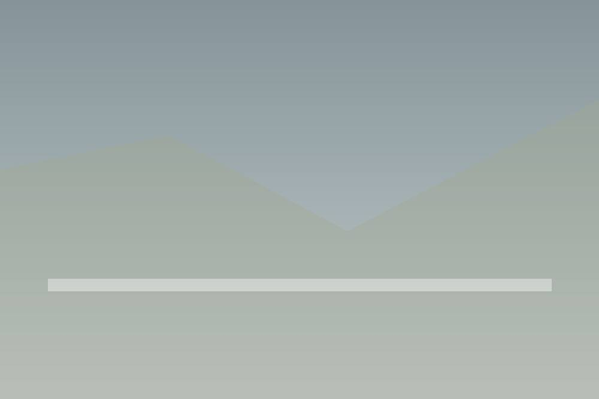
낡은 교사동 슬래브가 얼마나 무게를 견디는지 계산해 많은 학생이 있어도 안전한지 확정하고, 앞으로 얼마나 더 쓸 수 있을지 판정합니다.
슬래브 탄성 계수 측정, 견디는 힘 계산 모의 실험, 콘크리트 중성화 분석
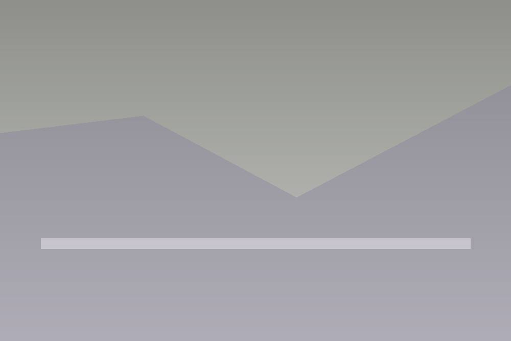
특수 의료 장비 무게로 바닥 구조가 얼마나 지쳤는지 분석하고, 장비가 돌 때 생기는 떨림이 건물 전체에 주는 영향을 판정합니다.
움직이는 하중 모의 실험, 바닥 구조 떨림 감쇠 측정, 무거운 장비 구간 응력 해석
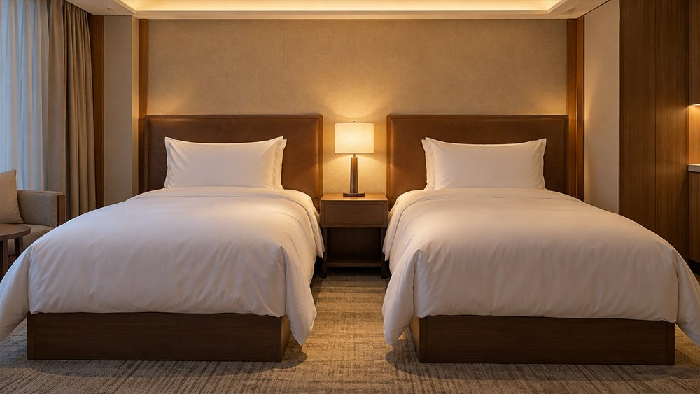
높은 층 바깥벽이 바람을 얼마나 버티는지, 오래 쓴 뼈대에 힘이 얼마나 남았는지 재서 큰 리모델링이 가능한지 따져 봅니다.
바깥벽 고정 앵커 당김 시험, 뼈대 남은 힘 측정, 바람 압력 모델 분석
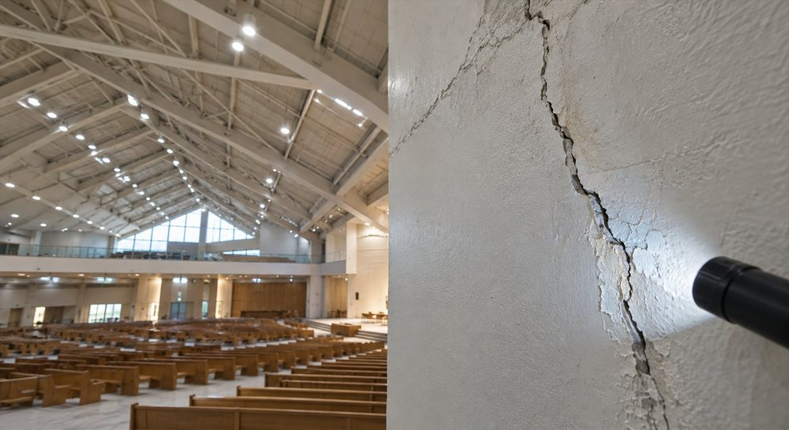
기둥 없는 넓은 지붕이 무게를 어떻게 나눠 받는지 해석해, 눈이 쌓이거나 강풍이 불 때 무너질 위험을 막습니다.
지붕 뼈대가 휘는 방식 해석, 넓은 홀 기둥이 받는 힘 셈, 긴 보가 처진 양 재기
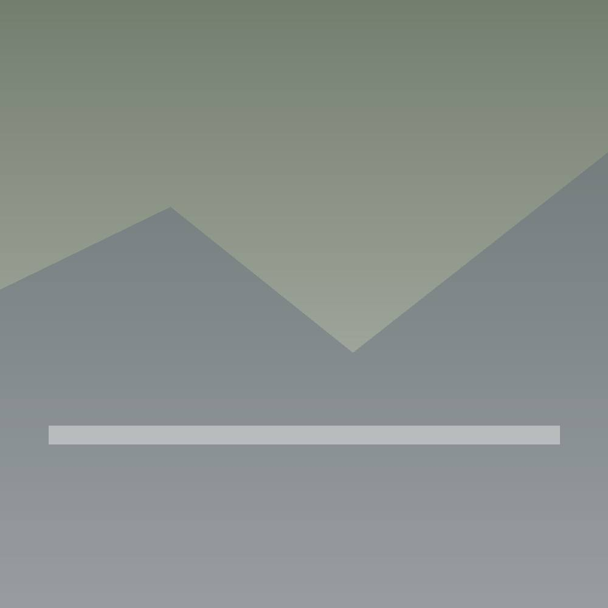
지하주차장과 아파트 주요 부재가 무게를 얼마나 견디는지 꼼꼼히 확인해 구조 안전을 평가하고, 물리적·기능적 낡은 정도를 등급으로 매깁니다.
주차장 천장판이 버티는 힘 확인, 콘크리트 속 소금기와 탄산화 재기
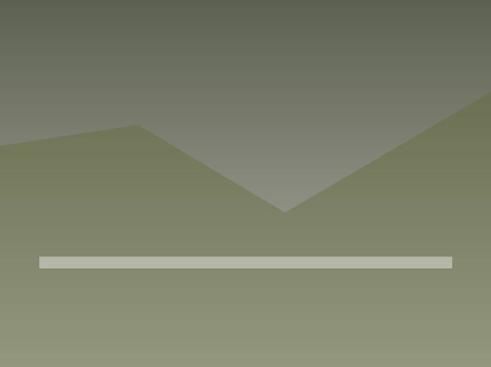
오래 쓸 목적에 맞게 남은 수명을 셈하고, 특수한 하중이나 충격을 받는 시설이 제 기능을 할 수 있는지 분석합니다.
낡아 가는 빠르기를 부재마다 셈하고, 남다른 하중을 얼마나 버티는지 분석
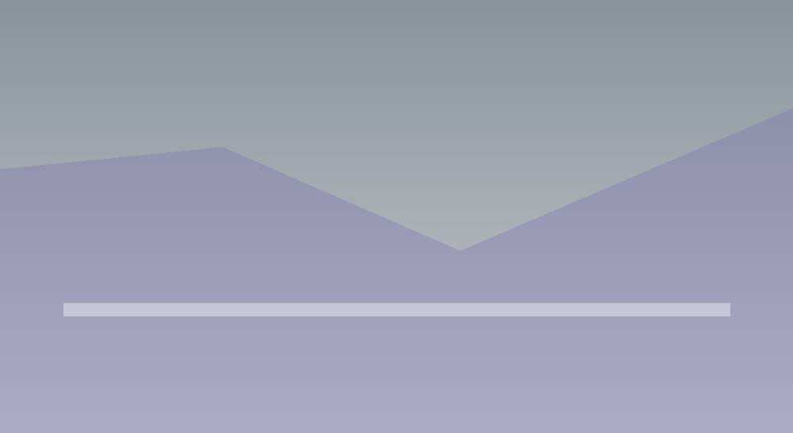
무거운 설비와 랙이 놓인 구간의 바닥이 얼마나 견디는지 셈해 지나친 무게로 고르지 않게 가라앉거나 기초가 무너질 위험을 막고, 보강 방법을 찾아냅니다.
땅이 받치는 힘 거꾸로 셈하기, 랙 무게 몰린 구역 응력 해석, 철골 이음 비파괴 검사
안전진단 전문기관 온하임
온하임은 건축·토목 안전진단과 구조 설계 면허를 갖추고 있고,
정밀안전진단을 맡을 수 있는 책임기술자와 구조기술사가 사무실에 있습니다.
진단을 맡는 구조 전문가들
시설물안전법에 따른 정밀안전진단 보수교육을 마친 구조 분야 기술 인력이 현장을 직접 맡습니다. 최신 진단 기준을 익힌 전문가가 참여해 법적으로 믿을 수 있는 결과를 냅니다.
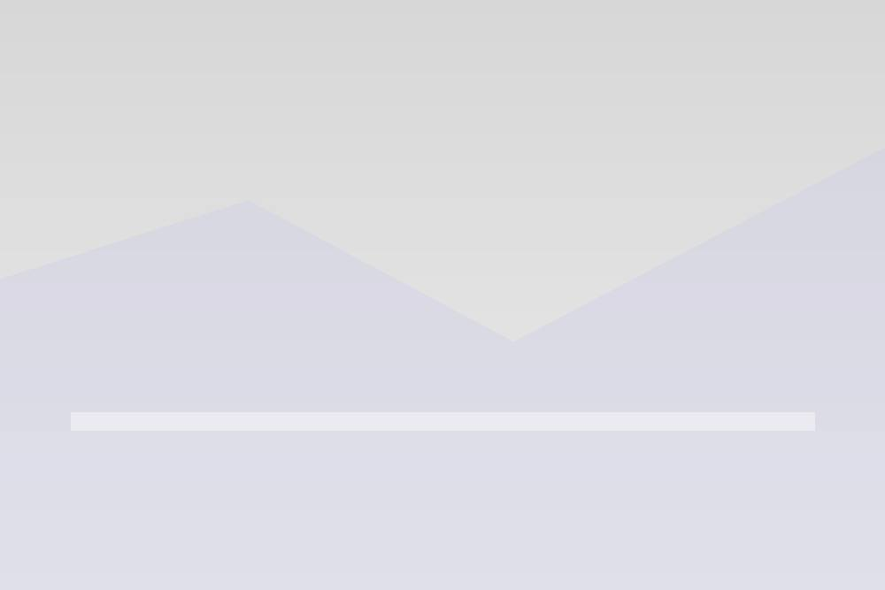

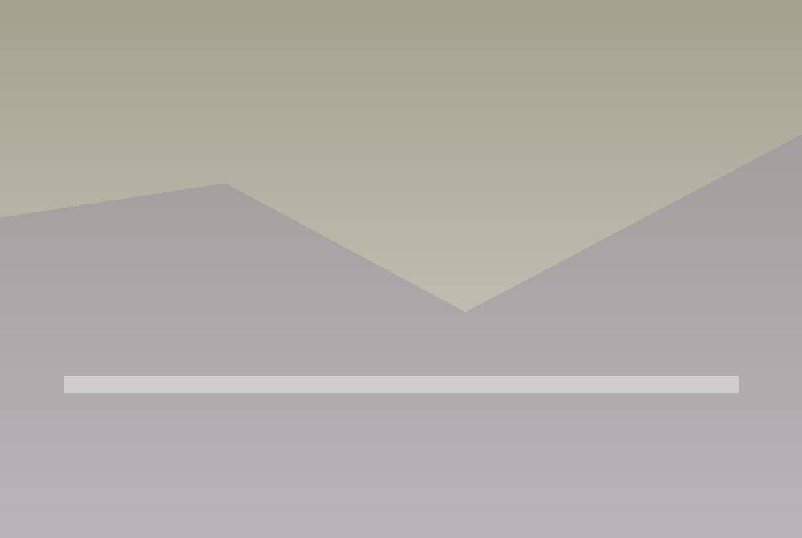
정밀안전진단은 이렇게 진행됩니다
정밀안전진단은 깊은 공학 분석이 들어가서 일반 점검보다 꼼꼼한 절차를 밟습니다.
- 도면과 구조 계산서부터 읽기
- 무게가 흐르는 길과 약한 곳 분석
- 시료 떼어 깨뜨려 보는 강도 시험
- 비파괴 측정과 움직임 조사
- 구조 해석
- 견디는 힘 셈하고 등급 판정
- 법적 기준에 맞춘 결과 보고서 작성
정밀안전진단에서 하는 일과 기술 지원
구조물에 직접 무게를 얹거나 부재를 떼어 내는 시험으로, 건물이 설계한 만큼 제 성능을 내는지 측정값으로 보여 줍니다.
지금 건물이 무게를 더 얹어도 안전하게 견디는지 숫자(내하율)로 셈
입체 모델 프로그램으로 지진이나 강풍이 왔을 때 건물이 어떻게 움직이고 어디가 약한지 내다보기
콘크리트 시료를 떼어 직접 깨뜨려 보는 시험으로 구조체에 남은 힘 파악
위쪽 구조물의 금이 낡아서인지 땅이 꺼져서인지 지반 조사로 밝히기
온하임이 맡아 온 정밀안전진단
여러 지역의 큰 시설물부터 아주 정밀하게 봐야 하는 특수 건물까지 정밀안전진단을 맡아 왔습니다.
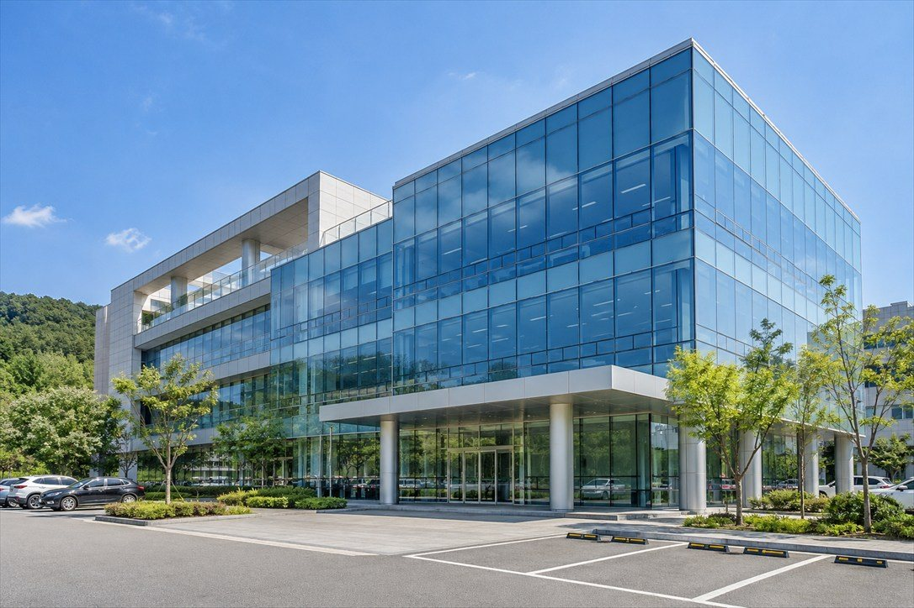
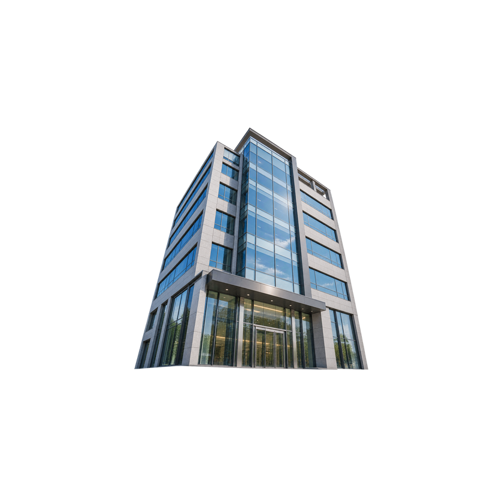
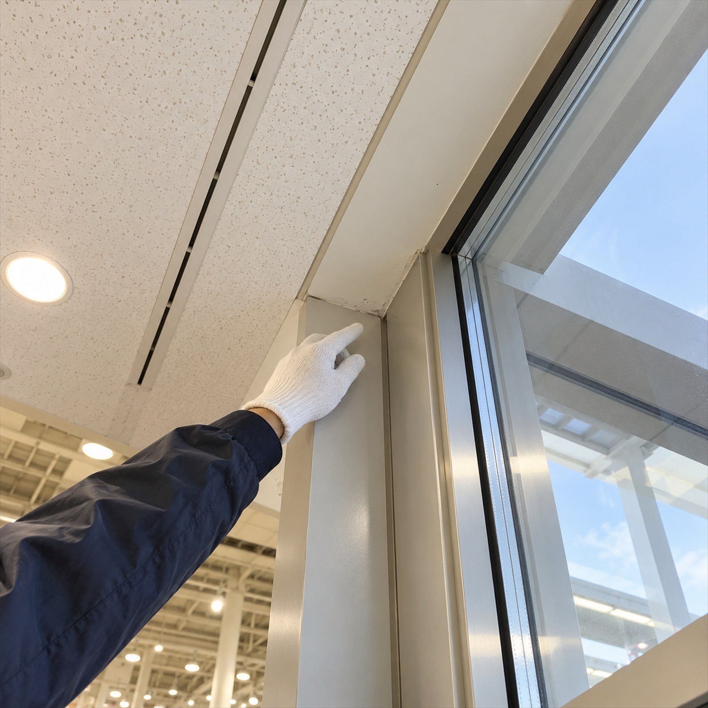
궁금한 점을 한곳에 모았어요
- 01
정밀진단이라는 게 정확히 뭔가요?
 A시설물의 물리적·기능적 결함을 찾아 구조 안전성과 결함 원인을 조사하고 재고 평가해서 보수·보강 방법을 내놓는 진단입니다. 안전점검으로는 잘 드러나지 않는 결함까지 찾아 빠른 조치로 이어지게 하는 게 목적이에요. 온하임은 설계도서와 구조 계산서 검토, 시료 채취와 비파괴 측정, 구조 해석, 안전등급 판정을 거쳐 결과보고서를 냅니다. (근거: 시설물안전법 제2조, 시설물의 안전 및 유지관리 실시 등에 관한 지침 제8조·제12조)
A시설물의 물리적·기능적 결함을 찾아 구조 안전성과 결함 원인을 조사하고 재고 평가해서 보수·보강 방법을 내놓는 진단입니다. 안전점검으로는 잘 드러나지 않는 결함까지 찾아 빠른 조치로 이어지게 하는 게 목적이에요. 온하임은 설계도서와 구조 계산서 검토, 시료 채취와 비파괴 측정, 구조 해석, 안전등급 판정을 거쳐 결과보고서를 냅니다. (근거: 시설물안전법 제2조, 시설물의 안전 및 유지관리 실시 등에 관한 지침 제8조·제12조) - 02
어떤 시설물이 정밀안전진단을 받나요?
A1종 시설물은 정해진 때마다 진단을 받아야 하는 법정 대상입니다. 2종 가운데 건물이 아닌 시설이 정밀점검에서 D·E등급을 받았을 때, 그리고 준공 뒤 30년 넘게 진단을 안 받은 2종·3종 시설물(건물 제외)이 C등급 이하가 됐을 때도 대상이에요. 그 밖에 안전점검이나 긴급안전점검 결과 재해를 막으려면 필요하다고 인정되면 시설 종류와 상관없이 결과보고서를 낸 날부터 1년 안에 진단을 시작해야 합니다. (근거: 시설물안전법 제12조, 같은 법 시행령 제10조) - 03
정밀안전진단과 정밀안전점검은 어떻게 다른가요?
A둘 다 겉모습 조사와 측정, 시험을 하지만 정밀안전점검은 주요 부재 위주로 상태를 보고, 정밀안전진단은 모든 부재의 외관조사망도를 그려 하나하나 자세히 평가합니다. 진단에는 구조 계산과 수치 해석으로 하는 안전성 평가가 들어가고, 결함 원인을 밝혀 보수·보강 방법을 내놓으며, 필요하면 내진 성능도 평가해요. 맡는 쪽도 달라서 정밀점검은 자격을 갖춘 관리주체가 직접 할 수 있지만, 정밀안전진단은 꼭 바깥 기관에 맡겨야 합니다. (근거: 시설물의 안전 및 유지관리 실시 등에 관한 지침 제25조·제26조, 시설물안전법 제26조) - 04
진단은 몇 년마다 받나요?
A1종 시설물의 첫 진단은 준공일이나 사용승인일 뒤 10년이 지난 때부터 1년 안에 받습니다. 그다음부터는 직전 등급에 따라 A등급 6년, B·C등급 5년, D·E등급 4년에 한 번 이상 받고, 주기는 지난 진단을 마친 달의 마지막 날부터 세요. D·E등급 2종 시설물이나 준공 뒤 30년 넘은 C등급 이하 시설물처럼 등급 때문에 받는 진단은 등급을 받은 날부터 1년 안에 시작해 시작 뒤 1년 안에 끝내야 합니다. (근거: 시설물안전법 시행령 제10조·별표 3) - 05
진단 등급은 어떻게 매기나요?
A부재별 상태 평가와 구조 안전성 평가를 합친 종합 평가로 정합니다. 상태 평가는 겉모습 조사와 재료 시험에서 찾은 결함, 손상, 노후 정도를 기준으로 하고, 안전성 평가는 재하 시험이나 구조 해석, 재료 시험 결과로 부재가 얼마나 무게를 견디는지 따져요. 최종 등급은 시행령 별표 8에 따라 A(우수)부터 E(불량)까지 다섯 단계로 매기고, D등급은 주요 부재에 결함이 생겨 급히 보수·보강하고 사용 제한 여부를 정해야 하는 상태를 말합니다. (근거: 시설물의 안전 및 유지관리 실시 등에 관한 지침 제25조·제26조·제28조·제29조, 시설물안전법 시행령 별표 8) - 06
진단에서 D등급 이하가 나오면 어떻게 되나요?
AD·E등급으로 지정되면 관리주체는 보수·보강 같은 조치를 해야 하고, 급하다고 판단되면 사용 제한이나 금지, 철거, 주민 대피 같은 안전조치를 합니다. 시설물에 위험 표지를 세우고 방송이나 인터넷으로 주민에게 알려야 하며, 보수·보강을 마치면 30일 안에 결과를 시설물통합정보관리체계에 입력해요. 시행령 별표 8은 E등급을 '바로 사용을 막고 보강하거나 다시 지어야 하는 상태'로 정해 두었으니, E등급이 나오면 쓸지 말지부터 정하셔야 합니다. (근거: 시설물안전법 제23조·제24조·제25조, 같은 법 시행규칙 제20조) - 07
정밀안전진단에는 어떤 장비가 필요한가요?
A온하임 진단에는 콘크리트 시료 채취 장비, 철근 탐사기, 슈미트해머와 초음파 측정기 같은 비파괴 시험 장비, 움직임 측정기, 입체 구조 해석 프로그램이 쓰입니다. 국토교통부 지침은 다가가기 어려운 곳에 접근 장비를 쓰고, 필요하면 교통 통제나 수중 카메라 같은 특수 장비도 쓰도록 정해 두었어요. 어떤 시험을 몇 곳에서 할지는 미리 현장을 보고 도면을 검토해 정하고, 장비는 검교정을 받은 것만 씁니다. (근거: 시설물의 안전 및 유지관리 실시 등에 관한 지침 제8조·제12조·제20조) - 08
진단 보고서에는 무엇이 들어가나요?
A시행령 별표 7은 진단 결과보고서에 진단 개요와 이력, 설계도면과 구조 계산서, 보수·보강 이력 자료 분석, 겉모습 조사와 재료 시험 결과를 담게 합니다. 이어서 콘크리트나 강재의 상태 평가, 구조 해석 같은 안전성 평가, 시설물 종합 평가, 보수·보강 방법, 종합 결론과 건의 사항이 들어가요. 안전성 평가에 쓴 해석 방법과 입력 자료, 계산 기록도 넣어야 해서 결론의 근거를 하나하나 따라가며 확인할 수 있습니다. (근거: 시설물안전법 시행령 별표 7, 시설물의 안전 및 유지관리 실시 등에 관한 지침 제26조) - 09
진단 비용은 무엇을 기준으로 셈하나요?
A국토교통부 고시의 대가 기준에 따라 시설물 종류와 크기별 기준 인원으로 직접인건비를 정하고, 제경비와 기술료, 직접경비를 더해 셈합니다. 구조 형식이 복잡하거나 지은 지 오래됐으면 금액이 조정되고, 예전 보고서를 주시는지도 반영돼요. 콘크리트 시료 채취 같은 재료 시험, 지반 조사, 내진 성능 평가처럼 기본 과업 밖의 항목은 선택 과업으로 더해지니, 시설물 종류, 연면적, 구조 형식, 진단 범위를 알려 주시면 그에 맞춰 견적을 드립니다. (근거: 시설물의 안전 및 유지관리 실시 등에 관한 지침 제55조·제60조·제62조) - 10
진단을 안 받으면 어떤 불이익이 있나요?
A법정 진단을 하지 않은 관리주체는 3천만 원 이하 과태료 대상이 되고, 안전점검을 안 했을 때보다 상한이 높습니다. 시행령 별표 15는 늦어진 기간이 6개월 미만이면 1,500만 원, 6~12개월이면 2천만 원, 12개월 이상이면 3천만 원으로 정해 두었어요. 내진설계 대상인데 내진 성능 평가를 빠뜨렸거나 결과보고서를 내지 않은 경우도 각각 따로 과태료 대상입니다. (근거: 시설물안전법 제12조·제67조, 같은 법 시행령 별표 15) - 11
아파트를 새로 짓기로 하려면 어떤 진단을 거치나요?
A재건축을 할지 가리는 절차는 시설물안전법의 정밀안전진단이 아니라 도시정비법의 재건축진단입니다. 재건축진단은 시장·군수 등이 재건축진단기관에 맡겨 주거 환경, 구조 안전, 건축 마감, 설비 노후를 평가하고, 그 결과를 도시계획과 지역 사정과 함께 따져 사업시행계획 인가 여부를 정해요. 정밀안전진단은 관리 단계에서 결함 원인과 보수·보강 방법을 찾는 진단이라, 재건축을 생각하신다면 관할 정비사업 부서에 재건축진단 절차부터 물어보세요. (근거: 도시 및 주거환경정비법 제12조) - 12
의뢰부터 보고서까지 기간은 어느 정도 잡아야 하죠?
A시설물 크기와 복잡한 정도에 따라 다르지만 대략 두 달에서 여섯 달이 걸립니다. 설계도서 검토, 시료 채취와 측정 같은 현장 조사, 시험 결과 분석과 구조 해석 순서로 진행돼요. 그 뒤 등급 판정과 보고서 작성이 이어지고, 실험실 시험 결과를 기다리는 기간도 여기에 들어갑니다. 도면과 예전 보고서를 미리 챙겨 주시면 사전 조사 기간을 줄이는 데 도움이 돼요. - 13
건물을 컴퓨터로 계산해 본다는 게 어떤 건가요?
A건물 모양, 부재 단면, 재료 강도, 하중 조건을 모델로 만들어 부재마다 걸리는 힘과 변형을 계산하는 일입니다. 진단 때는 현장에서 잰 실제 강도와 결함 상태를 넣어 약한 곳을 찾아내고, 고정하중, 활하중, 바람, 지진 하중을 모두 따져요. 보수·보강 공사를 할 땐 자재와 장비가 잠깐 올리는 무게까지 계산에 넣어 공사 중 안전도 확인합니다. (근거: 시설물의 안전 및 유지관리 실시 등에 관한 지침 제12조) - 14
시료를 떼어 내면 건물이 상하지 않나요?
A네, 시료 채취는 구조체 일부를 원통 모양으로 뽑아내는 시험이라 그 자리에 작은 흠이 생깁니다. 국토교통부 지침도 재료를 떼어 내는 실험실 시험은 시설물 전체 평가에 도움이 될 때만 하고, 손상된 곳은 원래대로 되돌리도록 정해 두었어요. 온하임은 떼어 낼 자리를 미리 협의해 정하고, 채취 뒤에는 고강도 모르타르로 메워 구조에 주는 영향을 줄입니다. (근거: 시설물의 안전 및 유지관리 실시 등에 관한 지침 제22조) - 15
진단을 맡는 기관은 어떤 자격이 있어야 하나요?
A정밀안전진단은 국토안전관리원, 그리고 기술 인력과 장비 기준을 갖춰 시·도지사에게 등록한 안전진단전문기관만 맡을 수 있습니다. 현수교 같은 특수 교량이나 댐처럼 국토교통부장관이 고시한 몇몇 시설은 국토안전관리원만 맡아요. 책임기술자는 시행령 별표 5에 따라 건축 분야라면 특급기술인 이상이거나 일정 실적이 있는 건축사이면서, 진단 교육을 마친 뒤 2년 넘게 실무를 한 사람이어야 합니다. 그 시설물을 설계·시공·감리한 회사나 계열사는 맡을 수 없어요. (근거: 시설물안전법 제26조·제28조, 같은 법 시행령 제21조·별표 5) - 16
온하임 진단의 강점은 무엇인가요?
A온하임은 건축·토목 안전진단과 구조 설계 면허를 갖추고 있고, 구조기술사가 사무실에 있습니다. 진단 보수교육을 마친 구조 엔지니어가 현장 조사를 직접 맡아, 시료 채취와 비파괴 측정 결과를 구조 해석으로 이어 결함 원인과 보수·보강 방법을 내놓아요. 학교, 병원, 물류센터처럼 하중 조건이 다른 시설은 쓰임에 맞는 항목을 더해 진단합니다. - 17
땅까지 조사해야 하는 경우가 있나요?
A건물 금이 그냥 낡아서인지, 땅이 꺼져서 생긴 구조 문제인지를 가려야 맞는 보수 방법을 찾을 수 있습니다. 진단에서는 기초와 땅의 움직임을 재서 침하가 계속되는지, 위쪽 구조물에 어떤 영향을 주는지 따져 봐요. 고르지 않은 침하가 확인되면 금 보수와 기초 보강을 함께 다루고, 시추나 시료 채취 같은 지반 조사는 필요할 때 선택 과업으로 넣습니다. (근거: 시설물의 안전 및 유지관리 실시 등에 관한 지침 제60조) - 18
이 보고서가 공식 서류로 인정되나요?
A네, 시설물안전법에 따른 진단 결과보고서는 안전등급 지정, 보수·보강 의무, 긴급안전조치 같은 법정 후속 절차의 근거가 됩니다. 관리주체는 이 보고서를 관할 기관에 내야 하고, 국토교통부장관은 결과를 평가해 부실하다고 보면 고치거나 보완하라고 할 수 있어요. 거짓으로 쓰면 3년 이하 징역이나 3천만 원 이하 벌금, 부실하게 쓰면 과태료 대상이 되고, 진단기관은 낸 날부터 10년 동안 보고서를 보관해야 할 만큼 공식 기록으로 다뤄집니다. (근거: 시설물안전법 제16조·제17조·제18조·제65조·제67조, 같은 법 시행규칙 제13조) - 19
오래된 건물이라 도면이 하나도 없는데 괜찮을까요?
A네, 할 수 있습니다. 설계도서나 준공 도서가 없으면 현장에서 부재 치수를 재 실측 도면부터 만들고, 철근 탐사와 시료 시험으로 철근 배치와 재료 강도를 확인해 구조 해석에 필요한 값을 채워요. 실측 도면 작성은 국토교통부 대가 기준에서 선택 과업으로 따로 비용을 잡는 항목이라, 도면이 있는지 상담 초반에 알려 주시면 일정과 견적을 맞추기 쉽습니다. (근거: 시설물의 안전 및 유지관리 실시 등에 관한 지침 제60조) - 20
다리·옹벽 같은 시설은 건물 진단과 어디가 다르죠?
A맡는 전문기관 분야와 조사 기준이 다릅니다. 시행령 별표 9는 토목 안전진단을 교량·터널, 수리시설, 항만 분야로 나눠 다리와 터널은 교량·터널 분야, 댐과 제방은 수리시설 분야가 맡게 하고, 옹벽은 세 분야 모두 할 수 있게 했으며, 공동주택과 대형 건물은 건축 분야가 진단해요. 구조 안전과 관련된 전기·기계 설비와 계측 시설이 함께 있는 토목 시설물은 그 설비를 해당 분야 자격자가 진단하게 되어 있는데, 이 규정은 건물엔 적용되지 않고, 조사 방법도 세부지침에서 다리, 터널, 댐처럼 시설별로 따로 정합니다. 단지 안 옹벽처럼 건물에 딸린 옹벽은 건물에 포함해 보고, 온하임은 건축 분야와 토목(교량·터널) 분야 안전진단전문기관으로 등록되어 있어 상담 때 시설물 종류부터 확인해 적용할 기준을 정합니다. (근거: 시설물안전법 시행령 제10조·별표 1·별표 9) - 21
아파트도 정밀안전진단을 받아야 하나요?
A아파트도 시설물안전법상 시설물이 될 수 있지만, 정해진 주기마다 받아야 하는 진단 대상은 아닙니다. 시행령 별표 1에서 16층 이상 아파트는 2종 시설물이고, 5층 이상 15층 이하 아파트는 준공 뒤 15년이 지나면 지자체 등이 3종으로 지정할 수 있는 범위에 들어요. 정밀점검에서 D·E등급을 받은 2종 시설물과 준공 30년 넘은 C등급 이하 시설물에 붙는 진단 의무는 모두 건물을 빼고 적용되니, 아파트 진단은 안전점검이나 긴급안전점검 결과 재해를 막으려면 필요하다고 판단될 때 합니다. 주상복합은 공동주택이 아닌 건물로 봐서 21층 이상이면 1종이 되고, 재건축 여부를 가리는 재건축진단은 도시정비법에 따른 별도 절차예요. (근거: 시설물안전법 시행령 제10조·별표 1·별표 1의2) - 22
진단 업체가 어느 분야에 등록돼 있는지 어떻게 확인하나요?
A등록 분야는 시·도지사가 내주는 등록증에 따로 칸이 있어서, 계약 전에 등록증 사본으로 확인하실 수 있습니다. 분야는 교량·터널, 수리시설, 항만, 건축, 종합으로 나뉘고, 시행령 별표 9에 따라 교량·터널 분야는 다리, 터널, 옹벽 등을, 건축 분야는 공동주택과 대형 건물 등을 맡으며, 종합 분야는 토목과 건축을 모두 진단해요. 등록 여부와 함께 진단할 시설물이 그 분야 범위에 드는지를 보시면 되고, 등록 사항은 시·도 등록대장으로 관리되며, 국토교통부는 관리주체가 기관을 고를 수 있게 전문기관 현황과 실적을 공개할 수 있습니다. 건축 분야와 토목(교량·터널) 분야에 등록된 온하임에 시설물 종류를 알려 주시면 맡을 수 있는 분야인지부터 말씀드려요. (근거: 시설물안전법 제36조, 같은 법 시행령 별표 9, 같은 법 시행규칙 제25조) - 23
진단은 어떤 지침과 세부지침을 따르나요?
A시설물안전법 제21조에 따라 국토교통부가 고시하는 '시설물의 안전 및 유지관리 실시 등에 관한 지침'과, 국토안전관리원이 장관 승인을 받아 정하는 세부지침을 따릅니다. 지침은 진단의 목적과 방법, 재료 시험, 상태·안전성 평가, 종합 평가, 결과보고서 작성의 틀을 정하고, 지침에 없는 방법과 절차는 세부지침을 따르게 해요. 세부지침에는 다리, 터널, 댐, 건물 같은 시설별 실시 방법과 점검 서식, 재료 시험의 최소 항목과 기준 수량, 상태·안전성 평가의 등급 기준이 담겨 있습니다. 국토교통부가 진단 결과를 평가할 때도 이 지침과 세부지침, 과업지시서가 기준이 되고, 온하임은 두 기준의 서식과 평가 방법에 맞춰 보고서를 씁니다. (근거: 시설물안전법 제21조, 시설물의 안전 및 유지관리 실시 등에 관한 지침 제3조·제19조·제66조) - 24
'성능평가'라는 것도 있던데 진단과 같은 건가요?
A정밀안전진단이 결함과 원인을 찾아 보수·보강 방법을 내놓는 절차라면, 성능평가는 구조 안전, 내구성, 쓰기 편한 정도 같은 성능을 종합 평가해 앞으로 성능이 어떻게 변할지 내다보고 관리 방향을 정하는 절차입니다. 성능평가 대상은 시행령 별표 13에 따라 1종·2종 가운데 고속국도·일반국도의 다리와 터널, 고속철도·일반철도의 다리와 터널, 무역항·연안항 계류시설, 다목적댐 등으로 한정되고, 건물은 공항 청사만 들어가요. 결과보고서도 달라서 성능평가에는 관리주체가 정한 성능 목표와 관리 지표, 그 목표를 고려한 유지관리 제안이 들어갑니다. 1종 시설물 성능평가는 정밀안전진단을 함께 하거나 1년 안에 한 진단 결과를 쓸 수 있어서 두 절차가 같이 진행되기도 해요. (근거: 시설물안전법 제2조, 같은 법 시행령 제28조·별표 13)
궁금한 점은
온하임에 문의하세요.
온하임의 고객센터는
언제든 문을 열어 두었습니다.
 시설물 안전점검
시설물 안전점검건축·토목 시설물 점검부터 FMS 등록까지 한 번에
 내진성능평가
내진성능평가지진에 대비해 시설물 안전을 챙기는 방법
 구조 안전진단
구조 안전진단공사 계획에 맞춘 구조 안전진단
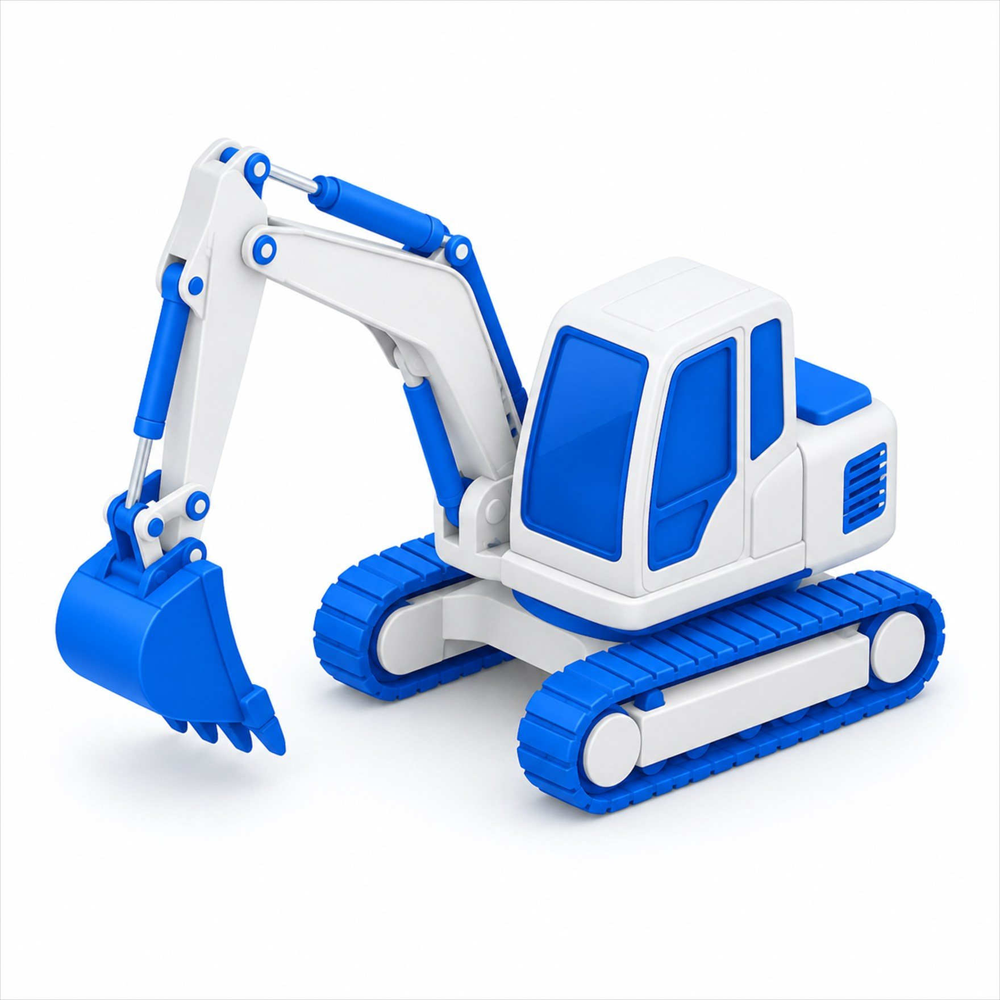
공사 현장 정기 안전점검공사 현장에 맞춘 안전관리
 인접건축물 현황조사
인접건축물 현황조사공사장 주변 건물을 골라 공사 전 상태를 조사
 하자진단 · 소송
하자진단 · 소송진단 전문가가 하자를 직접 살피고, 협상 자리나 재판에서 쓸 기술 자료까지 챙겨 드립니다
 현장기록
현장기록안전진단 업무를 빠르고 쉽게 바꿔 주는 프로그램
제휴 문의하기
개인정보를 모으고 쓰는 데 대한 동의(필수)
개인정보처리방침
법적고지
이메일무단수집거부
쿠키 설정
온하임은 사이트를 더 편하게 쓰실 수 있도록 쿠키를 씁니다. 방문 분석과 광고 측정은 처음에 켜져 있고, 한 번에 모두 끌 수 있습니다.
필수 쿠키
필수사이트가 제대로 열리고 돌아가는 데 꼭 필요한 쿠키입니다. 접속 상태를 이어 주고 보안을 지키는 데 씁니다.
분석 및 마케팅 쿠키
몇 분이 다녀가셨는지, 어떤 화면을 많이 보셨는지 살피는 데 씁니다.
현재 상태:허용